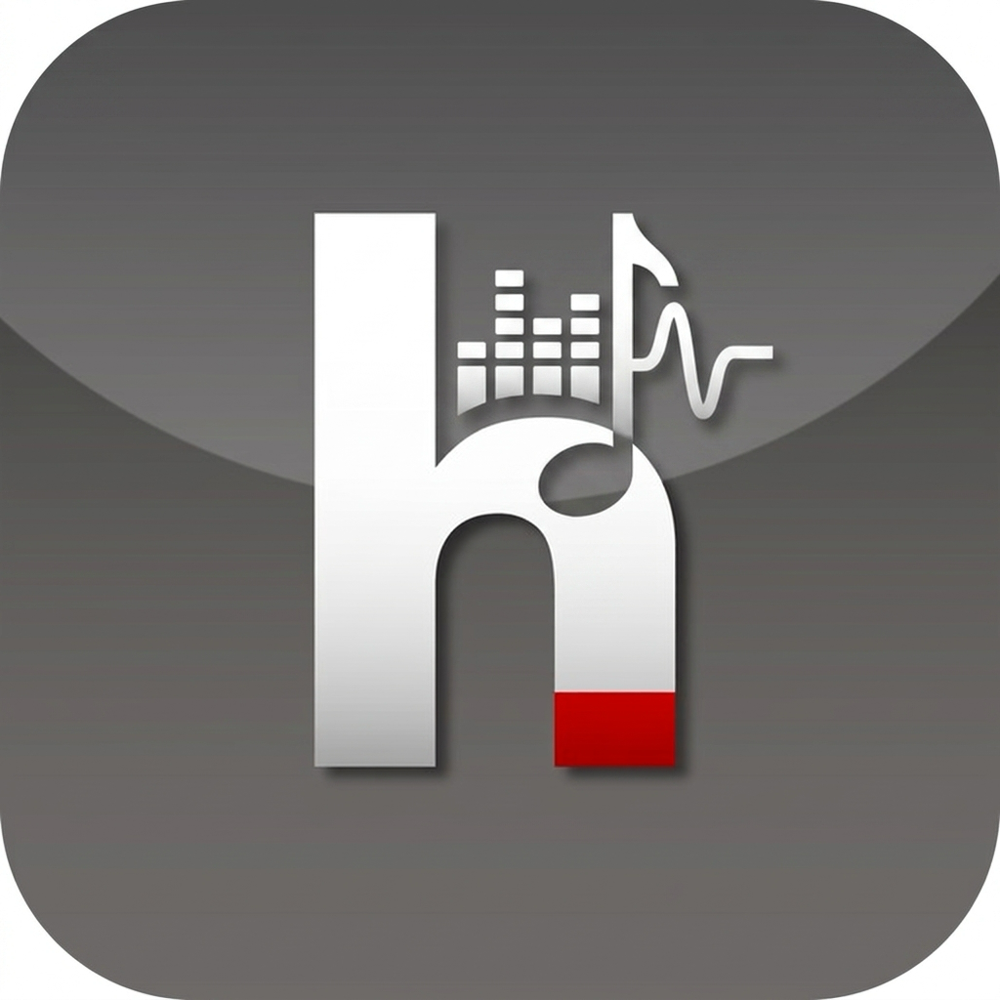

Браузерные расширения не имеют прямого доступа к сокетам ОС. Для работы Discord Rich Presence доступно 2 простых варианта:
start_bridge_mac.command (на Mac) или start_bridge_windows.bat (на Windows) из папки bridge/. Без установок и библиотек!arRPC, Vesktop или Legcord — расширение подхватит статус автоматически!